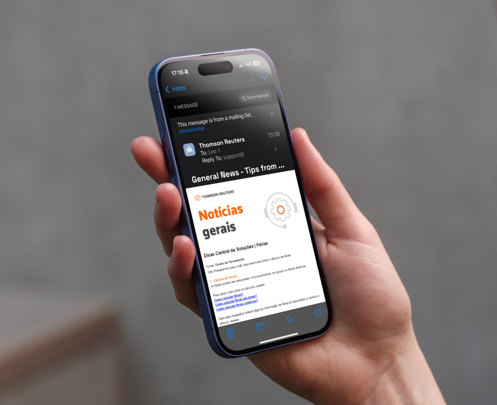
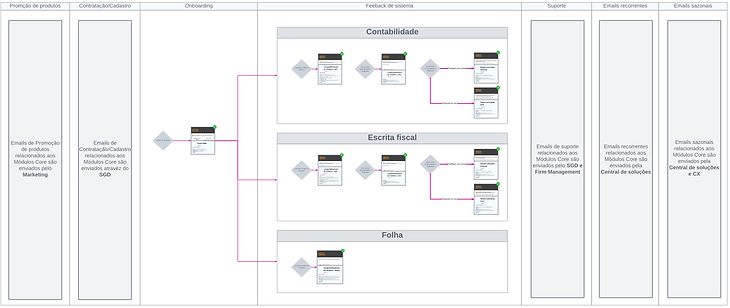
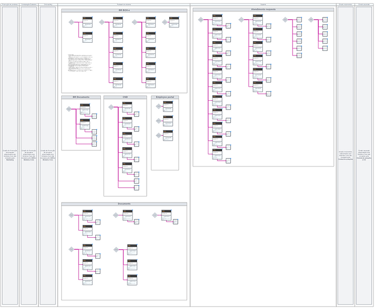
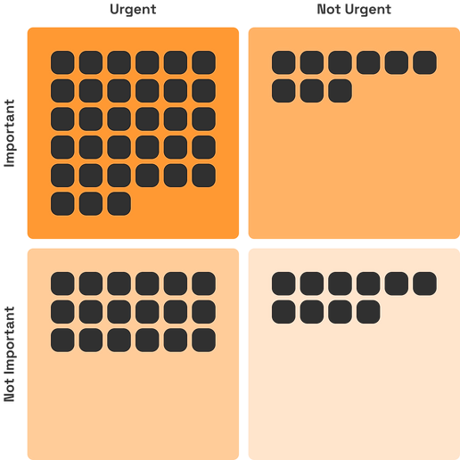
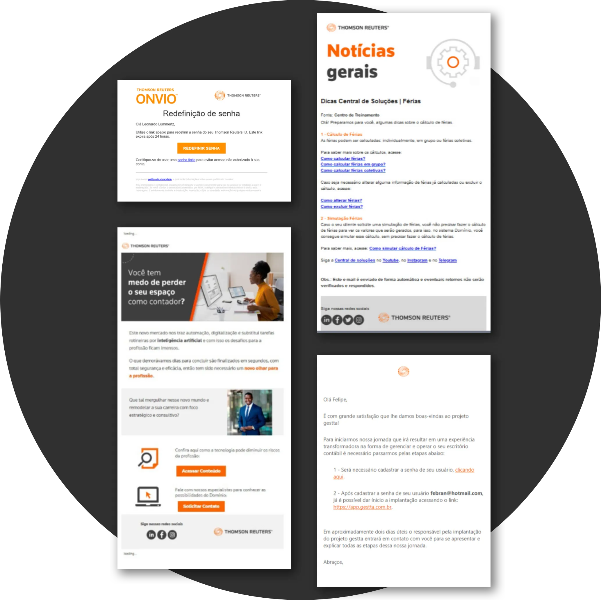
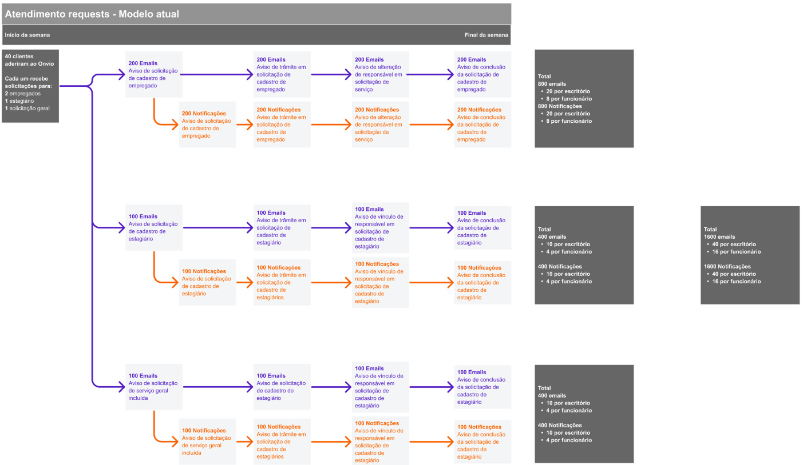
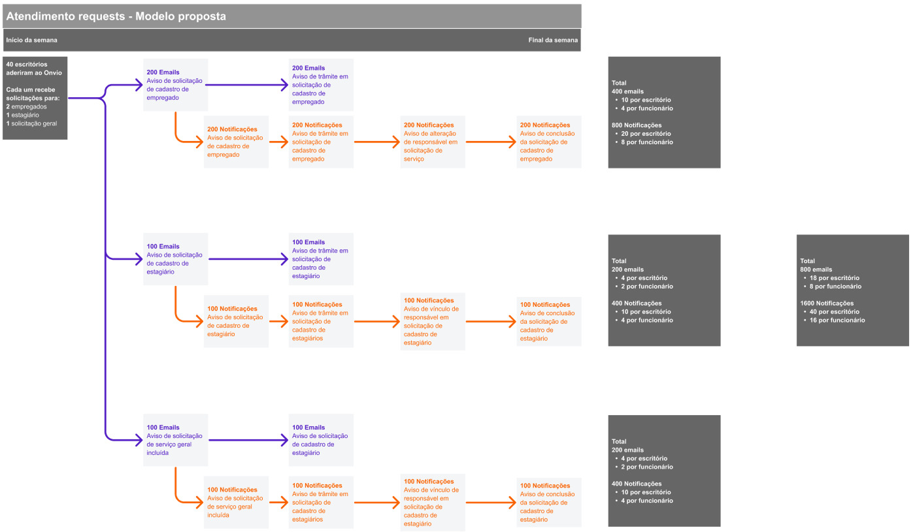
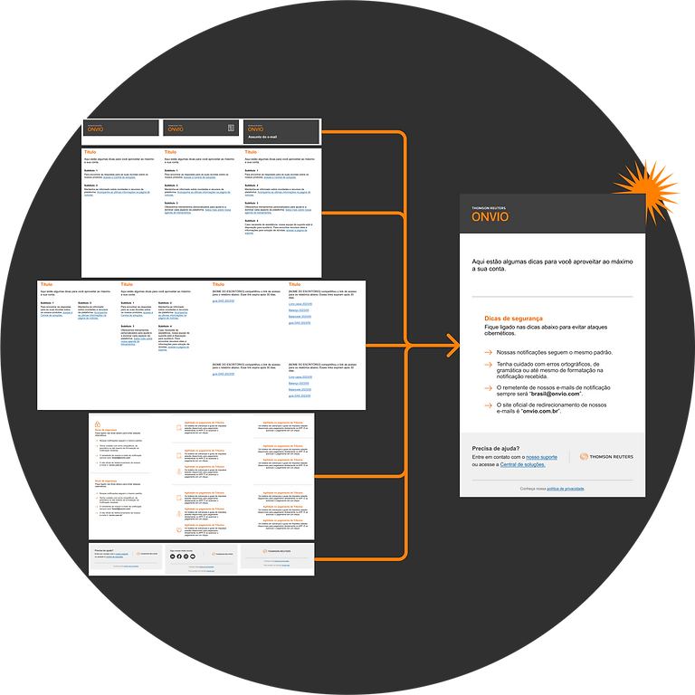
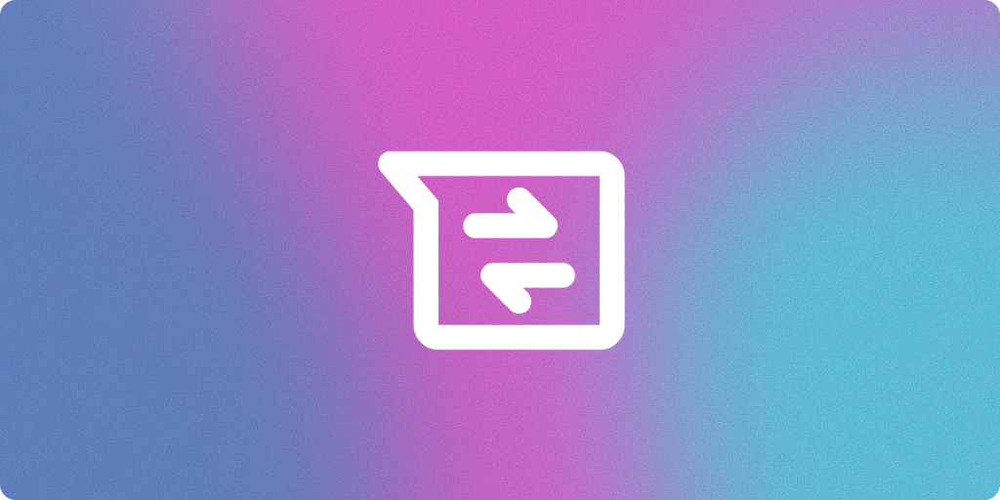
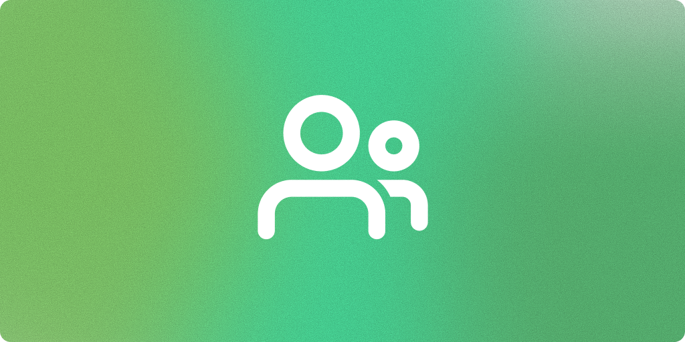

Thomson Reuters
User Communication
Thomson Reuters had accumulated dozens of fragmented emails and notifications across different teams, creating inconsistent experiences and unnecessary user noise. I helped redesign the communication strategy by auditing existing messages, consolidating content, and creating a scalable email design system.
Role:
UX Researcher
Tags:
Messaging
UX
Research
Understanding the problem
Mapping the communication ecosystem
Before redesigning the experience, it was necessary to understand the scale of the problem. I collaborated with product teams across the platform to audit every existing email and notification, mapping each message to its purpose, audience, and stage in the user journey.
Scroll to view all
Output
- 87 unique messages identified
- Multiple overlapping communications discovered
- No shared communication standards between teams



defining context
Identifying what users actually needed
Using the Eisenhower Matrix, each communication was evaluated based on urgency and value. This process was made with all the team stakeholders and helped teams identify redundant notifications, merge similar messages, and prioritize communications that genuinely supported user workflows.

Visual and content
Establishing consistency
While working on the eisenhower matrix, it was possibler to notice that each team had developed its own email style and tone, without shared patterns or guidelines, communications felt disconnected from the Thomson Reuters product experience.

Reducing noise through content strategy
Based on the findings, we eliminated unnecessary messages, combined overlapping notifications, and rewrote key communications using UX writing principles.
Before
- Multiple emails for a single workflow
- Inconsistent tone and structure
- Inconsistent visuals

After
- Fewer, clearer messages
- Improved information hierarchy
- More actionable communication

Creating a scalable email design system
To prevent future inconsistencies, a modular design system was created with reusable email templates in Figma based on common communication scenarios. These templates gave teams a shared foundation while allowing designers to create new emails faster.
Highlight:
- Modular layouts
- Consistent branding
- Faster future production

Outcome
Less noise, clearer communication
With all the changes, it was possible to reduce redundant emails and standardize communication across Thomson Reuters, clearing content and generating reusable templates to reduce interruptions and make experiences more consistent across teams.

Reducing communication overload
Reduced notifications, resulting fewer emails per month across companies.

Creating a scalable system
Built reusable templates that improved consistency and simplified future email creation.

Aligning teams around users
Unified teams around communication priorities by focusing on message value, urgency, and user needs.
In summary:
87 -> 12
Messages reduced to essential communications
349
Fewer emails sent per month across 299 companies
299
Companies covered by streamlined communication
1
Unified email design system
1
Shared UX writing framework
3 Core stages
audit, prioritization, and redesigns